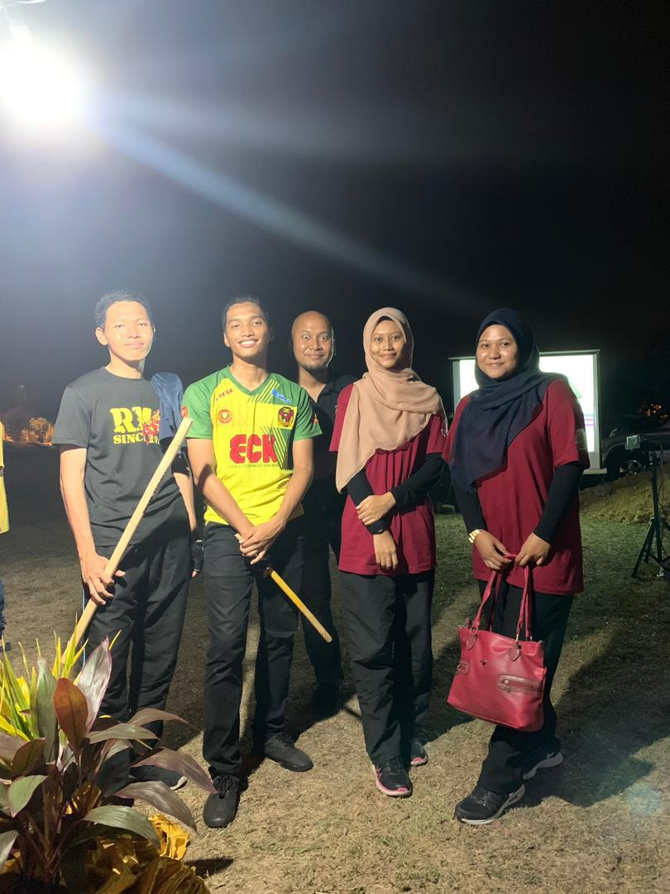
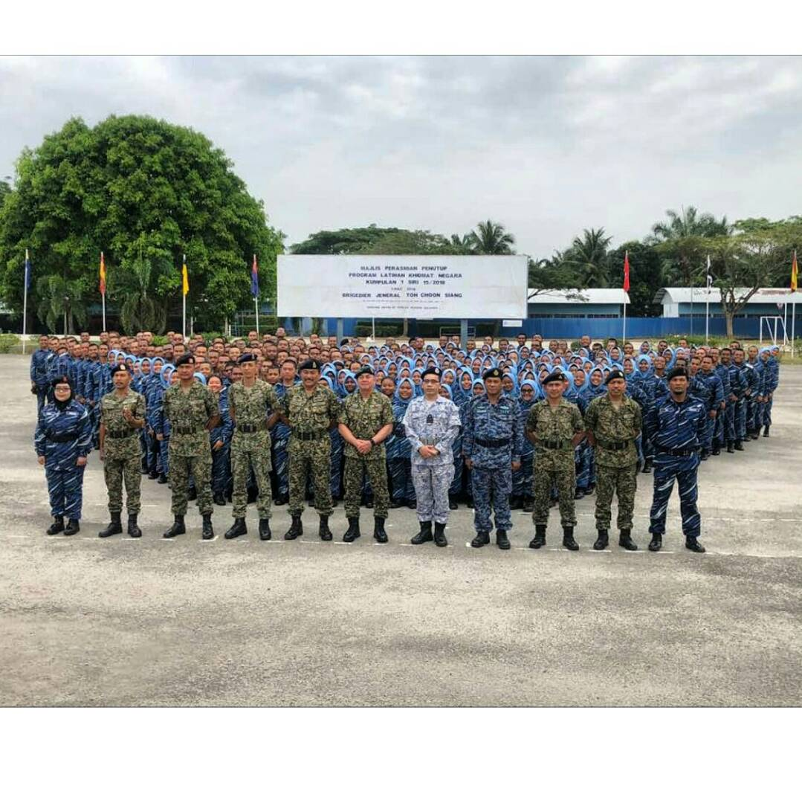
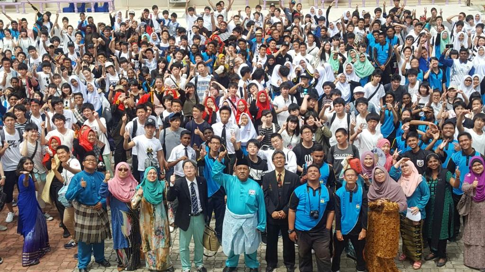

| WORKING | |||
| UNIVERSITY | Club event:"JOM RONDA SRS" Peringkat Daerah Kuala Muda 2019 in collaborating with PPD Kuala Muda and Kawasan Rukun Tetangga Taman Lembah Bujang | ||
| Prepare proposals for the club events/programmes | |||
| Conducted events for UiTM students (e.g; Sambutan Malam Kemerdekaan, Gegar Merbok etc) | |||
| Conducted club events with Lembah Bujang Community | |||
| Club events collaborating with Kementerian Perpaduan Malaysian | |||
| University Community Engagement (UCE) Malaysian Book of Records | |||
| SCHOOL/OTHERS | As a facilitator for some school events (anugerah Gangsa Remaja KBS 2016) | ||
| As a volunteer for 2017 Kuala Lumpur Sea Games | |||
| Participated in Malaysian-Japanese Exchange Student (2017) | |||
| Participated in Champion Programme (2016 - 2017) | |||
| Went to Program Latihan Khidmat Negara (PLKN) for 2 months |

This was during the event of "JOM RONDA SRS" with PPD Kuala Muda and Kawasan Rukun Tetangga Taman Lembah Bujang. In this event, me, Farah, Haziq and Awie have to act in front of the Taman Lembah Bujang community. All of us are the comittee of Sekretiat Rukun Negara (SRN) in UiTM Kedah which also had many events together with PPD Kuala Muda and Taman Lebah Bujang Community. At first, it was a bit awkward and shy for us, althought it is not our first time but it still make me nervous everytime we have to do it because people's eyes are focus on us. Thus sometimes, it kind of made me pressure if I do not do it well. And as expected, with the courage and support from them, we are able to perform it well. Besides that, since Sir Azam is the advisor in SRN so he is the one responsible to take care of us. The event went well and it ended around 1am. We are so hungry at that time and keep on convincing Sir Azam to go eat after that. Then, Sir Azam finally bring us to Nasi Lemak Royal at 1am in the morning. I think it is my fisrt time trying it and it is delicious! Then, we went back to the college. For me,it is also fun thus it is considered as one of the memories I can made thoughout the whole 2 years of my Diploma studies in UiTM Kedah. |

This photo is one the greatest memories that i had.Went to PLKN is something I could not expected that it would be so much fun. Also, the reason is that many people have said that PLKN is something wasted and it is better to go for a part-time job rather than going PLKN after SPM. But for me, I personally enjoyed my time so much. There are so many things that I will not get a chance to do it if I not join the PLKN. In PLKN, we also have classes that we need to attend every morning. In which, they will teach us about our future such as how do we excel in job interview, the communication with others and some other life tips. Besides that as everybody knows, PLKN will teach us some of the tips on how to protect ourselves in danger. For example, martial art and taekwondo. As a woman, I think it is important because we cannot imagine when the danger comes. Apart from that, we also got to learn some of the survival tips when in jungle where we have to cook in a military cooking equipment and cook using candles. And I guess it is once in a life time. I think going to PLKN is very heplful to make ourselves become discipline. For example, we have to wake up at 4am every morning, go to classes, tidying up everything after we use it and many more. Also, one of the things that I cannot forget was washing our clothes at 1am together while looking at the thousand stars in the sky! It is so beautiful thus release the tiredness throughout the day. |

This photo was taken during our school's Malaysian-Japanese Exchange Student Programme (2017). This programme was held on 17th February 2017 where around 300 Japanese students from Ibaraki Higashi High School. They went to our school in order to learn some of Malaysian Cultures such as the traditional outfits, our food, traditional games, traditional dance and so forth. It was fun to meet them as we can see that their excitement in learning about our cultures. Besides that, they also showed us some of their traditional dances. There, we get to learn some of basic languange from each other. For example, 'おやすみ (Oyasumi)' which means 'good night'. Apart from that, I amazed that most of them said that Malaysia's weather is so good. This because, it was too hot at that time and I remembered some of them even said "sweating is nice". I also made some friends such as Shaoki, Kita and some more that i have forgot (haha).Then, they need to leave where we have to say goodbye to each other. We also had a gift exchange to one another which I get a wooden fan from Kita and it was such a lovely gift. We also got a chance to take photos with them as a memory and some of them even asked for our Instagram so that maybe we can still stay in contact with them. Although it was short, I think it was so fun because they are kind and friendly. I hope I can see them again! |
|